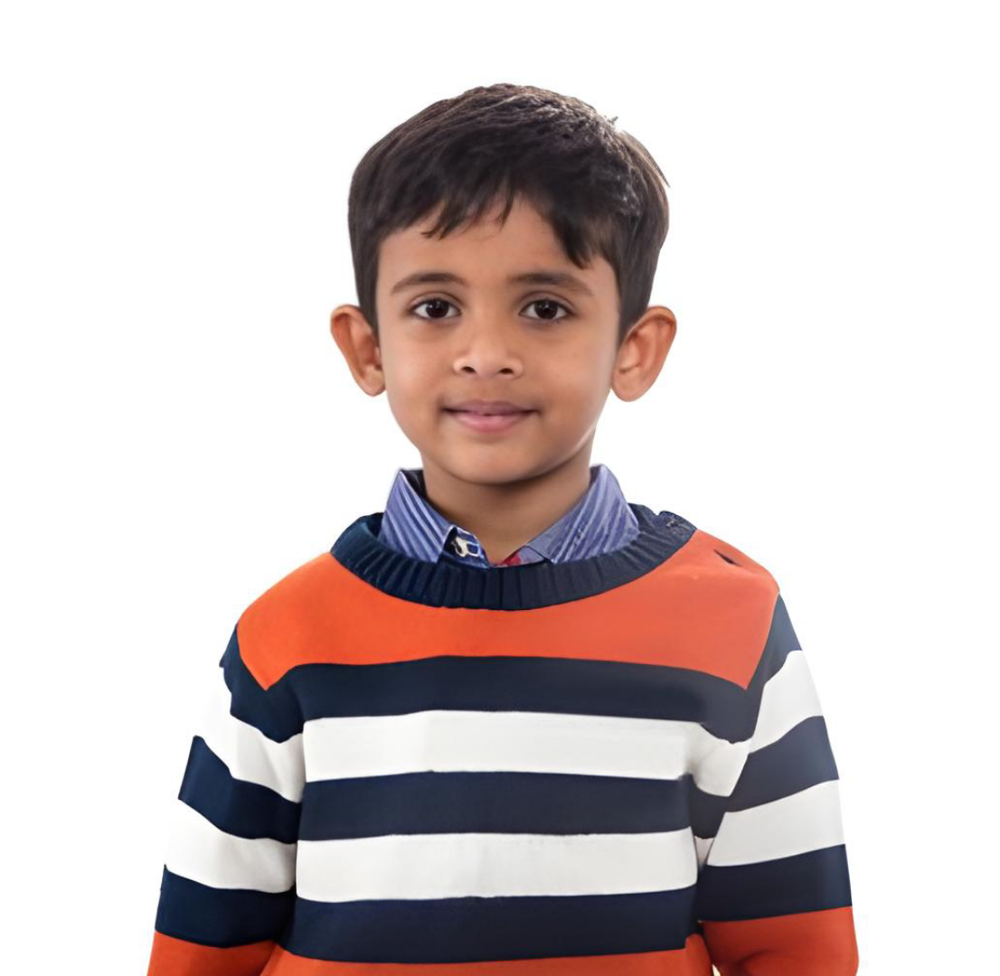

Meet Niranjan
Age: 8
ID:SRMKOO8
Condition: Tuberculosis(TB)
About Niranjan: Niranjan lost his parents at a young age and has been living in our orphanage. He loves playing cricket and studying in school, but his bright smile hides his struggles. He's been diagnosed with TB and needs urgent medical attention. Your support can help him recover and get back to his normal life.
Amount Required :₹ 20,000
Amount Gathered : ₹ 5,000
How You Can Help
- Donate: Your financial support can help us provide Niranjan with the medical care she needs.
- Volunteer: Spend time with Niranjan and help us with daily tasks.
- Spread the Word: Share Niranjan's story with your friends and family to help us raise awareness.